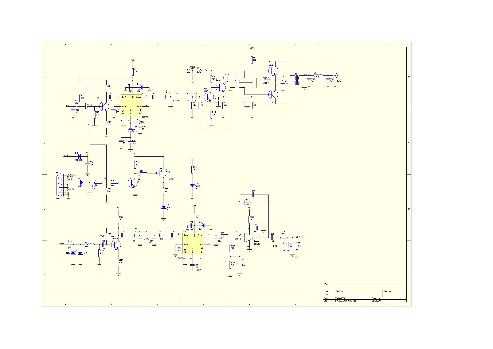

PSK是一种调制方式，意思是随着调制信号的幅度改变载波的相位。PSK31是业余电台的一种通信方式，是用PSK方式实现的每秒31个字符的无线电电传通信。1999年春天，PSK31像一把野火，燃烧了整个欧美业余电台圈子。PSK31最吸引的地方，就是用十分简单的设备，就可以在不怎么好的传播条件下实现远距离的通信。有些人说甚至是扬声器都不怎么听得出来的信号也能解调出稳定的文字。
PSK31可以用计算机软件实现调制和解调，而配合软件，在短波上操作时，需要的是一个SSB收发信机。计算机的声卡产生的音频信号，通过SSB调制到短波上，而接收到的SSB音频，再由声卡解调还原为文字。
2000年10月，北加QRP会（NorCal QRP Club， http://www.norcalqrp.org） 在一次研讨会上散发了一种PSK31 QRP套件。2001年3月，Dave Benson, NN1G和George Heron, N2APB在QST杂志上发表了《Warbler -- 一个80米波段简易PSK31收发信机》一文，介绍了这个套件。这个电路设计有一个非常有意思的特点，它利用了一块常见的晶体：3.579MHz，在接收和发射部分都使用了直接变频方式。直接变频的接收机（DC Receiver）不稀奇，就是用一块振荡在工作频率上的晶体产生的本振信号，直接把天线接收到的高频信号转换为音频信号。但是一般的SSB发射机都采用至少一个中频的两次搬移方案：先在一个频率较低的中频频率上实现SSB的调制，然后再用一个混频器把中频频率搬移到工作频率上去。Warbler则出人意料地在发射部分也采用直接变频，将音频信号直接调制到工作频率后放大发射出去。
一家美国QRP套件供应商Small Wonder Labs（ http://www.smallwonderlabs.com/） 随后将Warbler做成了套件，新泽西QRP会（New Jersey QRP Club, http://www.njqrp.org/） 则与北加QRP会一起大力在北美推广这个套件，并推出了配套的天线等。
80米波段是业余短波波段中波长最长的波段（如果把160米波段算作中波波段的话），它有自己的传播特点，非常适合在200公里以内提供“本地”通信。其他波长较短的短波波段，随着太阳黑子周期和季节的变化，传播条件起起落落。而选择合适的天线，80米波段可以在日落以后在200公里内提供像超短波一样稳定的本地通信，又能突破超短波70到100公里的距离限制。北美由于地广人稀，居住分散，80米波段很早就成为十分活跃的本地波段。在这个波段上，有许多局限于几个县或半个州的CW和SSB网络，甚至还有以报文接力方式工作的跨越北美大陆的通信网。
Warbler出现后，也掀起了一阵子热潮，在北美形成了相当数量的使用Warbler的本地PSK31网络。
最近我试着将Warbler国产化，对其设计做了一些改动，使用了国内容易购买的元件，成功地仿制了Warbler。改动的部分主要是去掉了原先复杂的收发转换电路，代之以两颗三极管构成的简单键控电路，并修改了取消了LM339后音频放大器的基准电压部分；另外磁环选用了国产的NXO-100和NXO-10型号，修改了相应的线圈数据；2N4401三极管换成了8050，尽管2N4401在国内也能买到，但是贴片的8050更常见；功放则另外选用了2SC1162。PCB设计时则全部选择了贴片元件。

电路图见上图。声卡产生的发射音频由Q2放大后送入IC1（NE602）的1脚。Q1是一个开关，由键控部分控制。IC1用一颗3.579MHz的晶体产生本振信号，调制后的信号从5脚输出给晶体滤波器。R3和D1、C3则用来给IC1和Q2提供7.5v的工作电压。假如输入的音频信号是1kHz的PSK31信号，Y3形成的本振是3579kHz，那么从5脚输出的就是3578kHz和3580kHz以及幅度较小的3579kHz三个信号。其中的3578kHz就是我们需要发射出去的差频信号（下边带）。
Y1和Y2及C4、C5、C7构成了发射晶体滤波器。本来，一个标准的SSB的滤波器是有严格的带宽、带内波动、斜率等的指标的。但是PSK31信号是一个带宽很窄的信号，所以带宽和带内波动就不那么重要了。这个滤波器只要能把距离信号频率1kHz以外的本振信号和2kHz以外的和频信号滤掉就可以了。
实际调整时，应该先测出滤波器的通带频率，然后根据这个频率来调整Y3的频率，以使得本振频率fLO-1kHz落在通带内，而本振频率fLO则落到通带的右侧（频率较高处）。
滤波器出来的信号由Q3和Q4构成的级联驱动放大器放大。R4用来匹配晶体滤波器，以提供合适的负载阻抗。驱动放大的输出由T1传送到功放，而L1与C10则用来匹配驱动放大器的输出和推挽功放的输入。
Q6和Q7构成了一个标准的甲类推挽功放。R8和R9通过T1的次级给两个晶体管提供偏置。从驱动过来的信号经过T1的次级分别把上半周和下半周分配给了Q6和Q7。Q6和Q7各自的输出再由T2的初级合并成为完整的正弦波发射出去。
C13、L2和C14构成了一个截止频率大约为4.5MHz的低通滤波器。它的两端阻抗都是50欧姆。T2的初级:次级的圈数比是1:4，因此Q6和Q7的负载阻抗就是12欧姆，理论上，12V供电电压可以得到12x12/25 = 5.76W的峰-峰功率输出。
我实际做的板子，在J2的2脚输入30mV的1kHz音频时，在50欧姆负载上输出了4W，2次和3次谐波在基频的25dB以下。
天线过来的信号经过C22和L3进入接收部分，D5和D6提供了对大信号的限制。Q8构成了一个简单的前置放大器，主要用来把天线回路的低阻抗匹配到晶体滤波器上去。Y4、Y5和Y6形成了接收滤波器。显然，这个滤波器需要与发射的滤波器尽可能一致。尽管业余条件下无法做出两个完全一样的滤波器，至少要保证Y3所形成的本振频率fLO-1kHz落在接收滤波器的通带内。
IC2是接收的乘积检波器，它使用发射混频器IC1和Y3产生的本振信号，这样就保证了这个小收发信机的接收和发射频率的一致。
检波输出由IC3的一半形成一个35dB增益的音频放大器。由于它的输出是提供给声卡的输入，声卡本身还能提供相当大的增益，所以增益大小并不是主要的问题。
R1给Q1的漏极提供偏置，当PTT高电平时使Q1导通，否则由于R18的作用，PTT线上的低电平使Q1截止，声卡输出的音频被阻断。Q1导通后，其导通电阻仅几十欧姆，R1和R12则组成了Q2的偏置电路，使得Q2工作。
同样，Q10的栅极受PTT线控制，高电平时Q10导通，使得接收音频输出被短路到地。
Q9和Q7构成电源开关，在PTT线高电平时给Q3、Q4组成的驱动电路和末级功放的偏置电路供电。
D8指示电源，D7指示发射。
收发转换时并没有在接收和发射电路之间切换天线，甚至没有用天线二极管做切换。这是小功率设备常见的做法，在功率不大时是可以用的。
整个电路布板在110x60mm的双面板上，这个尺寸正好可以买到现成的铝壳，其内部高度为23mm。唯一的两个接插件J1和J2直接焊在板上，这样安装就比较方便。除了2SC1162和电感、接插件以及D2、R10、R11、D7、D8和晶体，所有的元件都是贴片的，电阻和电容都是0603封装的。
采用贴片封装主要是元件采购方便，直插元件已经越来越不好买了。而且贴片元件没有引脚线，其高频特性比较好。
T1采用国产NXO-100的磁环，内径7mm，外径13mm，高5mm。用彩虹线的三股整齐地绕4圈，用其中的一种颜色作为初级，另外两种颜色各取一头一尾并在一起作为次级的中心端子，另一头一尾是次级的两头。
T2同样用与T1相同的磁环，先用0.38的漆包线绕8圈作为次级，然后用两股彩虹线在次级上绕4圈作为初级，绕的时候要注意保持两股线的平顺，不能互相绞合。同样这两股线首尾相连作为中心端子。
L2用国产NXO-10的磁环，内径5.5mm，外径10mm，高度5mm。用0.38的漆包线绕14圈，测量其电感约2.1μH左右。
磁环上绕线圈时，其圈数是指穿过磁环内心圆的线的数量。
电感L1和L3使用色码电感。
Q5和Q6上要加散热器。
以上的磁环和NE602、2SC1162及配套的散热器，在BD6QBY的淘宝网店（ http://shop35259389.taobao.com） 都可以买到。其他元件则很常见，应该在国内各大城市的元器件市场都能买到。PCB制作用的PCB文件，可以在http://fm.zju.edu.cn/~wengkai/ham/9480.zip下载，这个PCB文件没有做敷铜，您可以自己再加上敷铜。
这样一个PSK-80的小机器，可以配合BD6QBY的QRP天调，使用水平布置离地几十厘米的长线天线或偶极天线，在日落以后提供200公里内的有效通信。它最大的用处，就是给户外运动爱好者在露营时提供一种有趣的通信方式：超短波距离有限，CW需要学习，PSK只要有电脑就行。
当然，它也可以是一个很有效的应急通信设备，非常适合在复杂地形条件下的近距离通信，没有超短波的盲区问题，也不需要架设中继。PSK的调制方式还避免了短波低端噪声大造成的语音通信困难。
Warbler之后，北美的PSK QRP爱好者又有很多新的改进，有人把PSK的调制解调和Warbler或其他波段的QRP设备做在一起，出去就不需要电脑了。还有人提出，PSK本来是一种幅度固定的信号，完全没有必要使用低效率的甲类功放，可以使用CW发射机使用的丙类功放。当然，这样的话，也不能再使用SSB的调制方式，而必须使用直接PSK调制了。